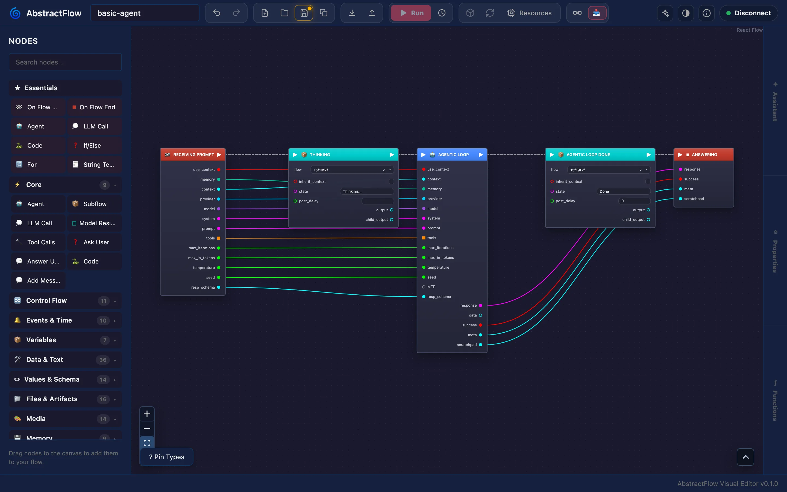
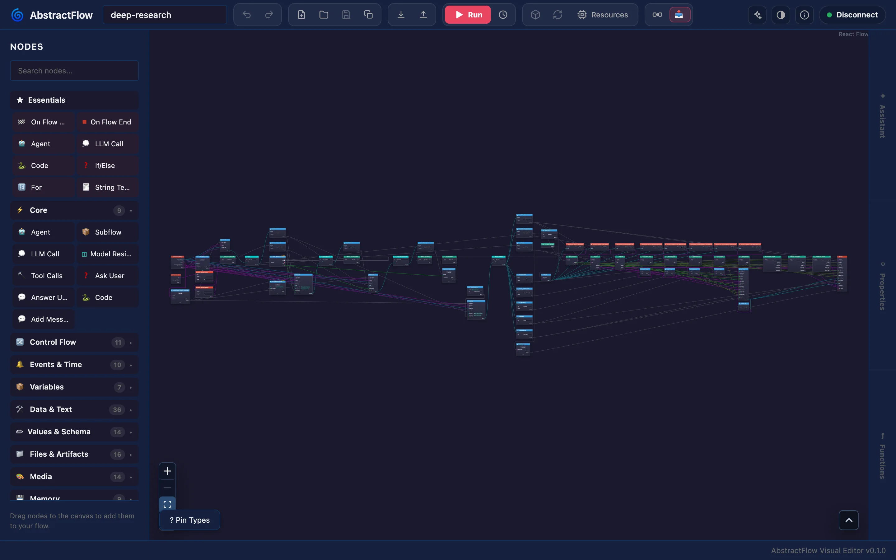

AbstractFlow
Draw multi-agent systems: agents and model calls wired together with plain Python code, branches, loops, subflows and human approvals. Publish a workflow to your AbstractGateway and it becomes a versioned executable you run like an endpoint: as the agent of a chat in AbstractCode or AbstractAssistant, once from AbstractObserver, on a schedule as an automation, or from any program with one API call.
# Gateway console: Apps > Flow Editor > Open
# (served at /apps/flow/, already signed in)
# Or on its own: http://127.0.0.1:3003/
npx @abstractframework/flow --gateway-url http://127.0.0.1:8080Draw it, publish it, use it everywhere
AbstractFlow is a web app (@abstractframework/flow): a browser editor plus a small Node server that forwards /api/* to the gateway. It ships no Python package and no execution host: the gateway stores your workflows and AbstractRuntime compiles and runs them durably, with a ledger of every step.
1. Draw
Wire agent, LLM, tool, code, control, media, file and memory nodes on a canvas. Declare the interface the workflow implements, such as abstractcode.agent.v1, so agent clients know how to call it.
2. Publish
Publish packs a new .flow workflow bundle version (the workflow, its subflows and metadata in one file) and installs it on the gateway. Earlier versions are kept; leave the version empty and it is bumped for you.
3. Run it
As the agent of a chat (/workflow in the AbstractCode terminal, the Workflow list in AbstractCode web), once from the Observer's Launch page, as the target of an automation, or with one API call. Leave model pickers on Auto (Gateway default) and the gateway's defaults choose the model at run time.
4. Make it the default agent
An admin makes it the gateway's default workflow for an interface. Every chat that follows Gateway default in AbstractCode, the Assistant or your own client runs it from its next turn; a turn never changes workflow while it runs.
Loop engineering, graph engineering
The loop, the verifier, the deterministic checks and the approval step are nodes you can see. Change one, publish again, and the next run uses it. The workflows the gateway ships open in the editor like any other.

coding-agent workflow (35 nodes): a builder loop with verification gates and delivery branches.
basic-agent workflow, the default chat agent, with the node palette.
deep-research workflow (64 nodes), fit to view: a long pipeline with fan-out branches.One published workflow, many clients
A client starts a workflow in one of two ways: by name (bundle_id, optionally a version and a flow_id), or as "the gateway's default for this interface" (flow_id: "@default" plus interface), which the gateway resolves at every new turn.
| Client | Where you choose the workflow | What it lists |
|---|---|---|
| AbstractCode terminal | /workflow (alias /agent) in a session, or --workflow default | coding-agent:coder | <bundle_id>[@version][:<flow_id>] | Published workflows that declare abstractcode.agent.v1, Gateway default first; the choice is kept in ~/.abstractcode/prefs.json |
| AbstractCode web | The Workflow list in the toolbar | The coding agents published on your gateway, Gateway default first; Show all workflows adds schema-driven workflows |
| AbstractAssistant | Settings → Models → Workflow | Gateway default and the shared catalog's workflows that declare abstractassistant.agent.v1 (an admin promotes a published bundle to the catalog) |
| AbstractObserver | Launch → Run once: pick a workflow, fill its inputs, Launch now | Any bundle on the gateway (its latest version) and the default agent; one run per launch |
| Automations | The automation's target: a published workflow, or the default agent of an interface | Workflows of the gateway's own registry |
| Your app | POST /api/gateway/runs/start | GET /api/gateway/bundles, GET /api/gateway/workflow-catalog |
Start a workflow by name
# Start a run of a shipped workflow (flow_id omitted: the bundle's default entrypoint)
curl -sS -H "Authorization: Bearer $TOKEN" -H "Content-Type: application/json" \
-d '{"bundle_id":"basic-agent","input_data":{"prompt":"How long should I steep green tea?"}}' \
"$GW/api/gateway/runs/start"Or the gateway's default agent
curl -sS -H "$AUTH" -H "Content-Type: application/json" \
-d '{"flow_id":"@default","interface":"abstractcode.agent.v1","input_data":{"prompt":"Hello"}}' \
"$BASE_URL/api/gateway/runs/start"Every start answers with the run id and the exact workflow version that runs it (resolved_workflow). Inside a chat, the workflow is the chat's driver: every turn is a run of the selected workflow on the same session_id, and the client can switch workflow between turns. The run's ledger records every step, and any client can load it and follow it live.
Make it the default agent of a client
A client that runs an agent names an interface rather than a fixed workflow, and the gateway setting agents.default_workflow.<interface> decides which workflow answers. With nothing saved, AbstractCode (abstractcode.agent.v1) runs the shipped basic-agent and the Assistant (abstractassistant.agent.v1) runs its built-in orchestrator. An admin changes it in the web console (Workflows → Make agent default), in the terminal console (Runtimes → Runtime knobs → Edit default agent workflows) or from the command line; the change is audit-logged. A saved workflow must declare the interface, and a default that no longer resolves is refused rather than replaced.
abstractgateway config set agents.default_workflow.abstractcode.agent.v1 coding-agent:coderAgentic steps and deterministic code in one graph
The palette groups nodes by family. Every media node runs through a capability the gateway advertises, and the editor shows a control only where the gateway supports it.
Agents and models
Agent runs a ReAct agent that calls tools; LLM Call, Tool Calls and Subflow (another saved workflow) complete the set. A Reasoning control (Auto, or off to xhigh) and an MTP depth setting each take a run-scoped override; response schemas are built on the resp_schema pin.
Deterministic code
Code runs a Python transform(_input) body in the runtime's sandbox, and data input pins take small Python expressions (RestrictedPython), with a Functions drawer of named helpers shared across a flow. Array, string, object, JSON and math nodes cover the rest.
Control flow
If/Else, Switch, Compare and boolean logic; ForEach, For and While loops; Parallel and Sequence; variables that carry state between iterations.
People and events
Ask User pauses the run for a free-text answer or a choice, Answer User replies. On Flow Start and On Flow End; On Event, On Schedule, Wait Event and Delay wait inside a run that has already started.
Media
Voice: Generate Voice, Transcribe Audio, Listen Voice. Music: Generate Music. Vision: Generate Image, Edit Image, Restore / Upscale Image, Generate Video, Image To Video, Analyze Media. Camera: Camera Open, Capture Photo, Capture Video, Camera Close. Vision nodes take a batch count, ordered seeds and LoRA stacks where the model supports them.
Files, memory and entities
Read File, Write File, Read PDF, Write PDF, Write DOCX and Write Chart; knowledge-graph and memory nodes (KG Assert, KG Query, Memorize, Recall); and an Entity Mind family (memory recall and formation, diary read and write, consolidation) for entity workflows.
The contract a client calls
A workflow lists the interfaces it implements (Flow Library → Interfaces). The editor adds each interface's required pins to On Flow Start and On Flow End; the client sends inputs to the start pins and reads results from the end pins. The gateway checks that a workflow declares the interface a client asks for.
| Interface | On Flow Start outputs | On Flow End inputs |
|---|---|---|
abstractcode.agent.v1 | provider, model, prompt | response, success, meta |
abstractassistant.agent.v1 | provider, model, prompt | response, success, meta |
abstractcode.coding.v1 | request | report, passed |
abstractreview.adversarial.v1 | artifact | findings, verdict |
abstractextract.structured.v1 | source_text, fields_spec | data, valid |
abstractbatch.mapreduce.v1 | items | results, synthesis |
The full list, with pin types, is in VisualFlow format.
From draft to a workflow everyone can run
Save and publish
The editor stores drafts on the gateway (/api/gateway/visualflows/*). Publish installs a bundle version in the gateway's registry, which is shared by every user of that gateway, so publishing there needs an admin. Admins can also promote a version to the gateway's shared workflow catalog, which the Assistant lists.
Automation Defaults
In the Flow Library, a runnable workflow's Automation row stores what an automation created from it starts with: the trigger (Schedule or Manual), its settings (a fixed UTC interval, no cron), Independent or Growing context, a title and default inputs. Publishing carries them into the bundle.
Run and watch
Run in the editor publishes a draft version and starts it, and you follow each step with previews of generated voice, music, images and video. You create and manage automations in AbstractObserver, AbstractAssistant or AbstractCode; see Automations.
Packing a bundle from Python
Outside the editor, AbstractRuntime packs a bundle from VisualFlow JSON files. Upload the result with POST /api/gateway/bundles/upload, or place it in the directory named by ABSTRACTGATEWAY_FLOWS_DIR.
from abstractruntime.workflow_bundle import pack_workflow_bundle
pack_workflow_bundle(
root_flow_json="/path/to/root.json",
out_path="/path/to/bundles/my-bundle@0.1.0.flow",
bundle_id="my-bundle",
bundle_version="0.1.0",
flows_dir="/path/to/flows",
)basic-agent (the default chat agent), coding-agent (a builder agent and a verifier that runs gates every round), deep-research, co-scientist and the Assistant's orchestrator out of the box, as VisualFlow JSON files in this repository. Shipped workflow sources maps each bundle to its files, so you can open one in the editor, change it and publish it under your own bundle id.Open the editor
You need a running AbstractGateway (abstractgateway serve, or the installer).
# Gateway console: Apps > Flow Editor > Install, then Open
# or from a terminal:
abstractgateway apps install flow --launch
# The editor is at <gateway address>/apps/flow/ and opens signed innpx @abstractframework/flow --gateway-url http://127.0.0.1:8080 --port 3003
# or install the command
npm install -g @abstractframework/flow
abstractflow-editor --gateway-url http://127.0.0.1:8080
# open http://127.0.0.1:3003/ and sign in with a gateway user id and token| Flag | Meaning |
|---|---|
--gateway-url <url> | The gateway to talk to (aliases --gateway, --url). Without it: the saved login, then the gateway installed on this computer (~/.abstractframework/gateway.json), then http://127.0.0.1:8080. A gateway found this way is followed when it moves to another port. |
--port <n> | The port to listen on (default 3003). |
--host <addr> | The address to listen on (default 127.0.0.1). Use 0.0.0.0 only when other computers must reach this server directly; through the gateway no change is needed. |
Each browser signs in with a gateway user id and that user's token. The editor exchanges the token for a gateway session kept in HTTP-only cookies and does not keep the token. Serving at /apps/flow/ needs AbstractGateway 0.7.0 or later.